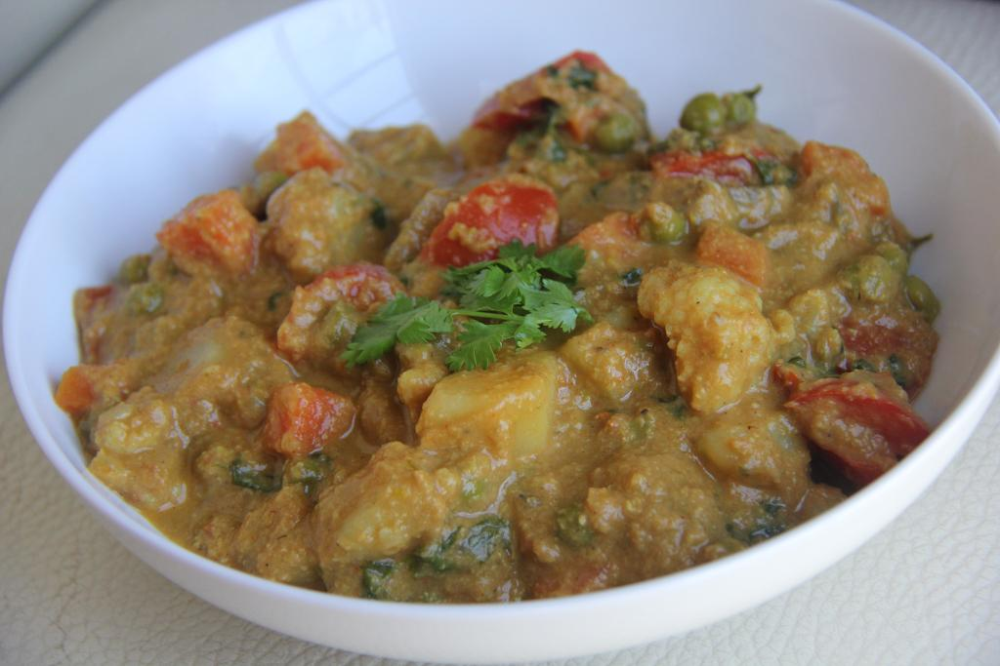

Khorma

Description
A great recipe and simple to make; customize it for your own likes or dislikes and enjoy!
Ingredients
- ¼ cup margarine
- 2 skinless, boneless chicken breasts, chopped
- 1 small onion, chopped
- ½1 clove garlic, chopped
- 1 cup boiling water, or as needed
- 1 cube chicken bouillon (such as Oxo®)
- 1 tablespoon unsweetened coconut cream
- 2 teaspoons curry powder, or more to taste
- ½ (8 ounce) container plain yogurt
Steps
- Melt margarine in a large saucepan over medium heat until sizzling, about 1 minute. Add chicken and cook
until no longer pink inside and juices run clear, 3 to 5 minutes.
- Add onion and garlic to the saucepan and cook until soft, about 5 minutes. Combine water and bouillon cube
in a bowl and stir to dissolve. Pour into saucepan. Add coconut cream and curry powder and stir to combine.
Bring to a boil, about 5 minutes. Reduce heat to a simmer, cover saucepan, and cook about 30 minutes.
- Remove from heat and stir yogurt into the saucepan. Mix well before serving.
Return to homepage